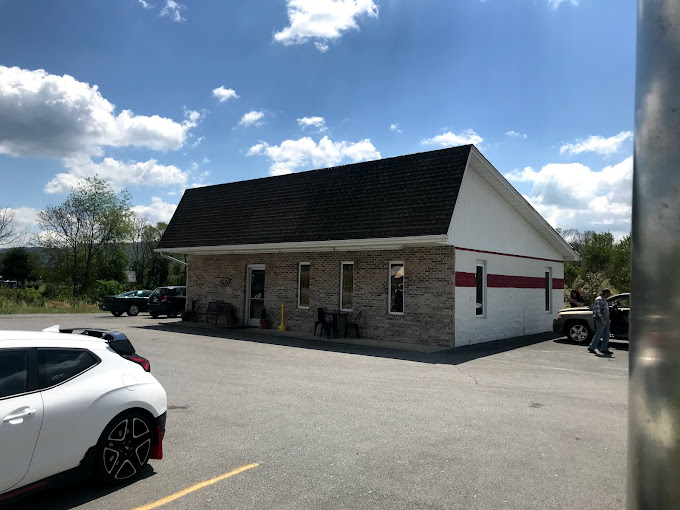
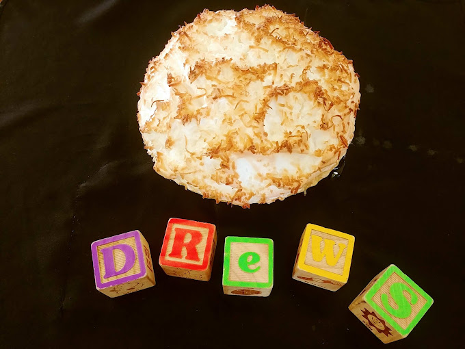
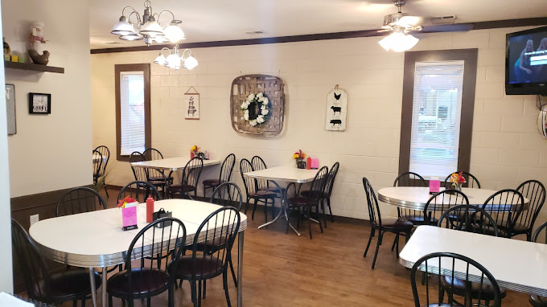

Home
 
Country cooking in the heart of Church Hill. We offer home style cooking and fresh cakes! Drew’s is owner-operated and a family-first restaurant. Named after the owners’ adopted child Andrew, Drew’s is a classic diner that serves up classic American southern cooking.
Contact Us: (423) 256-2999
Address: 506 East Main Blvd. Church Hill, TN 37642
Business Hours
Monday - Thursday: 11:00 AM - 7:30 PM
Friday: 8:00 AM - 7:30 PM
Saturday & Sunday: Closed
